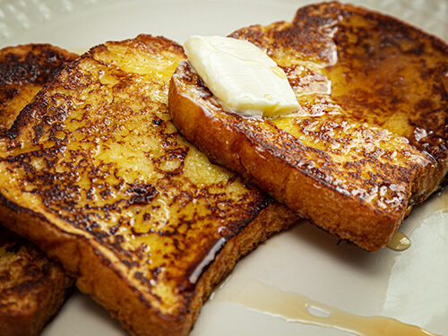

Document
French Ass Toast

Description
A sweet breakfast option with nearly a 1000 calories and over 100 carbs!
Ingredients
- 1 serving Sugar Free Maple Syrup
- 1 tsp Vanilla Extract
- 4 regular slice White Bread
- 1 tbsp Butter
- 0.5 tsp Salt
- 2 tsp Cinnamon
- 0.33 cup 1% Fat Milk
- 2 large Eggs
- 2 serving Light Brown Sugar
Steps
- In a medium-size bowl, whisk together your eggs.
- Add into the mixture your milk, sugar, cinnamon, salt, and vanilla extract.
- Set aside and heat up your pan (medium heat) with light olive oil spray.
- Dunk both sides of each slice of bread into mixture.
- Place bread onto hot pan for 2 minutes on each side.
- Continue this process with all the other pieces of bread.
NOTE: A protein shake is recommended with this meal.